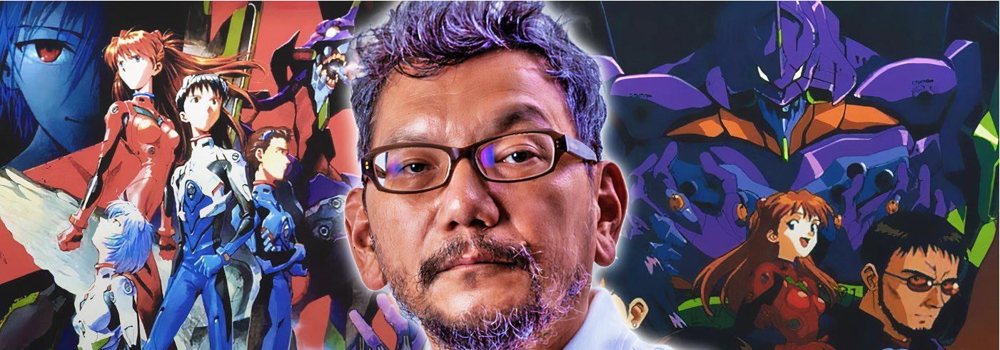

L'Empereur du Japon
Naruhito
126ème empereur, gardien de la plus ancienne monarchie héréditaire au monde


L'Art Culinaire Japonais
Maître Sushis
De la délicatesse des sushis à l'umami des ramens, une célébration des saveurs
